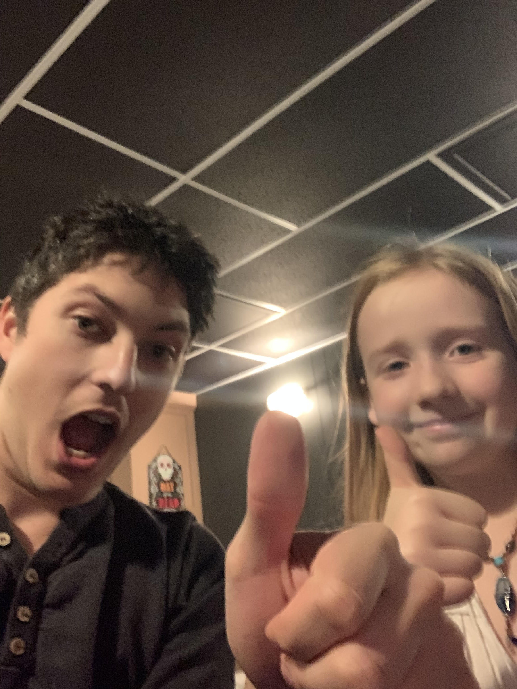

David et Vara site web
Comment fabriqué un projecteur sans fils
Avant que vous commenciez, vous aurez besoin de;
| ● | Une boîte |  |
| ● | Des ciseaux |  |
| ● | Un Pistolet à colle | 
|
| ● | iPhone |  |
| ● | Une loupe |  |
| ● | Deux trombones |  |
Ensuite
| ● | Prends une boîte puis coupe une troue |  |
| ● | Colle le loupe dessous la troue de la boîte |  |
| ● | Plier les trombone puis collé dessous la boîte |  |
| ● | Mettre ton télèphone sur les trombones |  |
Maintenant vous avez un projecteur car la loupe amplifie l'image de la cellulaire sur le mur!
